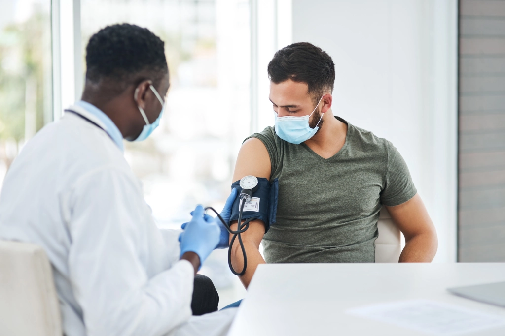

Covid-19 provoca ao menos uma sequela em 65% dos brasileiros, diz estudo
Perda de olfato ou paladar, problemas musculares, fadiga e perda de memória foram os principais impactos relatados em pesquisa com 9 mil pessoas

Fisioterapia ajuda pacientes com sequelas pós-Covid
Para cerca de 65% dos brasileiros, a infecção pela Covid-19 provocou sequelas, que incluem a perda de olfato e do paladar. Os dados são de uma pesquisa nacional chamada Covitel, que avalia, de maneira mais ampla, por telefone fatores de risco para doenças crônicas não transmissíveis.
Ao todo, nove mil brasileiros, de capitais e cidades do interior das cinco regiões do Brasil, foram entrevistados por telefone (fixo e celular).
O questionário trazia perguntas sobre percepção geral de saúde, prática de atividade física, hábitos alimentares, saúde mental e prevalência de hipertensão arterial e diabetes, além de consumo de álcool e de tabaco. Os entrevistados também forneciam informações sobre gênero, faixa etária, raça, escolaridade e situação de trabalho.
Um em cada quatro entrevistados relatou ter infecção por Covid-19 confirmada. Do total de infectados, 8,2% necessitaram de internação, dois terços (64,9%) declararam ter sequelas, e mais da metade (55,1%) afirmou ter mudado algum hábito.
Dentre os infectados, 55,7% relataram morar com alguém que teve a doença e, desse total, 31,7% afirmaram ter se infectado após o início da doença de algum familiar.
Em relação aos tipos de sequelas da doença, a perda de olfato ou paladar foi relatada por 3 em cada 10 pessoas infectadas. Na sequência, problemas musculares foram relatados por 25,5% dos entrevistados; fadiga ou cansaço, por 23,6%; e perda de memória, por 21,3%. Perda de cabelo foi apontada por 19,3% dos entrevistados e falta de ar, por 18,6%. Todas as outras sequelas foram relatadas por menos de 15% da amostra.
Continua depois da publicidade

Impactos para a saúde
Entre o período pré-pandemia e o 1º trimestre de 2022, houve um aumento de 91,8% entre os brasileiros que avaliam negativamente seu estado de saúde, relatando que está ruim ou muito ruim.
Já o consumo de legumes e verduras caiu 12,5% na população em geral. O que também diminui foi a prática de atividade física, com redução de 21,4% na proporção de pessoas que cumprem o recomendado pela Organização Mundial da Saúde (OMS).
O levantamento destaca ainda as mudanças na saúde mental, com o diagnóstico de depressão aumentando entre os adultos brasileiros. Ao mesmo tempo, outros índices que vinham melhorando nos últimos anos, como o tabagismo, tiveram a tendência positiva interrompida, se mantendo estagnados.
A pesquisa é desenvolvida pela Vital Strategies, organização global de saúde pública, e pela Universidade Federal de Pelotas (UFPel), a partir da articulação e financiamento da Umane, com apoio do Instituto Ibirapitanga e da Associação Brasileira de Saúde Coletiva (Abrasco).
Doenças crônicas não transmissíveis
No Brasil, cerca de 70% das mortes são causadas por consequências das doenças crônicas não transmissíveis (DCNTs) e seus agravos.
“O Covitel surgiu para contribuir com a construção de conhecimento sobre a influência da Covid-19 nos fatores de risco que levam ao aumento das prevalências de câncer, diabetes e doenças cardiovasculares e respiratórias crônicas”, explica Thais Junqueira, Superintendente Geral da Umane.
A pesquisa contou com um bloco de perguntas sobre a Covid-19 e vacinação. Os entrevistados ainda foram questionados sobre seus hábitos em dois períodos: o pré-pandemia de Covid-19 e o primeiro trimestre de 2022, quando as entrevistas foram realizadas e as vacinas contra a Covid-19 já estavam amplamente disponíveis.
“O Covitel mostrou que a pandemia atrapalhou o enfrentamento das doenças crônicas não transmissíveis no Brasil, aumentando alguns comportamentos de risco, como a inatividade física”, reforça Pedro Hallal, professor titular da Universidade Federal de Pelotas (UFPel) e um dos coordenadores da pesquisa.
“A redução da prática de pelo menos 150 minutos de atividade de intensidade moderada por semana aconteceu ao mesmo tempo em que os hábitos alimentares pioraram, com a diminuição do consumo de verduras e legumes, por exemplo. O único destaque positivo com relação a alimentação foi a redução de consumo de refrigerantes e sucos artificiais, que caiu 25,4% no Brasil”, acrescenta Hallal.
Segundo a pesquisa, entre o período pré-pandemia e o 1º trimestre de 2022, foi registrado um aumento de 41% no diagnóstico médico de depressão. Entre as mulheres houve aumento de 39,3%, e nas pessoas com maior escolaridade (12 anos ou mais de estudo), 53,8%.
Pandemia dificultou diagnóstico de doenças como a hipertensão, segundo o estudo / Foto: Getty Images (PeopleImages)
Os indicadores relacionados à prevalência de diagnóstico médico confirmado para hipertensão e diabetes revelaram que não houve aumento estatisticamente significativo entre os períodos da pesquisa. No entanto, a pandemia pode ter atrapalhado o diagnóstico oportuno das doenças, dizem os especialistas.
“Essa estabilidade pode estar vinculada ao menor acesso a diagnóstico médico no período de isolamento social, quando as pessoas deixaram de procurar os serviços de saúde, prejudicando, consequentemente, os tratamentos oportunos para essas importantes questões de saúde”, explica Luciana Sardinha, Assessoria Técnica de Saúde Pública e Epidemiologia da Vital Strategies e uma das coordenadoras do estudo.
A pesquisa aponta que a pandemia agravou as desigualdades em saúde. Entre os 12 indicadores que tiveram mudanças estatisticamente significativas para o Brasil, o grupo de pessoas que perdeu o trabalho durante a pandemia teve os piores resultados em oito deles.
Enquanto 94,4% das pessoas com maior escolaridade (12 anos ou mais de estudo) tinham completado o esquema vacinal no 1º trimestre de 2022, apenas 76,9% daqueles com menor escolaridade (0 a 8 anos de estudo) tinham tomado todas as doses recomendadas.
Os pesquisadores afirmam que as doenças crônicas não transmissíveis, em grande medida, são evitáveis. “Dados como os trazidos pelo Covitel são fundamentais para a vigilância em saúde, orientando as prioridades, o planejamento e ações relacionadas às políticas públicas de saúde”, afirma Pedro de Paula, diretor-executivo da Vital Strategies.